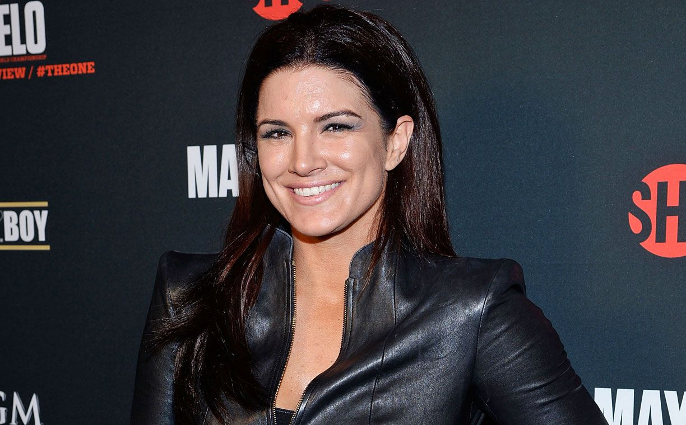

El Reparto Estelar de Deadpool
Ryan Reynolds

Personaje: Wade Wilson / Deadpool
Ryan Rodney Reynolds es un actor, actor de voz, comediante, guionista, productor de cine y empresario
canadoestadounidense.
Nacimiento: 23 de octubre de 1976 (edad 48 años), Vancouver, Canadá
Cónyuge: Blake Lively (m. 2012), Scarlett Johansson (m. 2008–2011)
Estatura: 1,88 m
Hermanos: Jeff Reynolds, Terry Reynolds, Patrick Reynolds
Próxima película: Animal Friends
Padres: Jim Reynolds, Tammy Reynolds
Fuente: Wikipedia
Morena Silva de Vaz Setta Baccarin
Personaje: Vanessa Carlysle
Morena Silva de Vaz Setta Baccarin, conocida como Morena Baccarin, es una actriz
brasileño-estadounidense.
Nacimiento: 2 de junio de 1979 (edad 45 años), Río de Janeiro, Brasil
Estatura: 1,71 m
Cónyuge: Benjamin McKenzie (m. 2017), Austin Chick (m. 2011–2016)
Padres: Vera Setta, Fernando Baccarin
Hijos: 3
Hermanos: Tauã Baccarin
Fuente: Wikipedia
Ed Skrein

Personaje: Francis Freeman / Ajax
Edward George "Ed" Skrein es un actor y rapero británico. Es conocido por el personaje de Ajax en la
película de Marvel, Deadpool y por su papel de Frank Martin en el reinicio de la saga de The
Transporter con la película The Transporter Refueled.
Nacimiento: 29 de marzo de 1983 (edad 42 años), Camden, Londres, Reino Unido
Estatura: 1,85 m
Hijos: Marley Skrein
Nombre de nacimiento: Edward George Skrein
Fuente: Wikipedia
Gina Joy Carano

Personaje: Angel Dust
Gina Joy Carano es una actriz, modelo y exluchadora de artes marciales mixtas estadounidense. Carano
apareció como la gladiadora Crush en American Gladiators. Ha sido denominada como la «cara de las
mujeres de MMA».
Nacimiento: 16 de abril de 1982 (edad 43 años), Dallas, Texas, Estados Unidos
Estatura: 1,73 m
Padres: Glenn Carano, Dana Cason
Hermanos: Casey Carano, Christie Carano
Artes marciales: Artes marciales mixtas, Muay thai
Cabello: Castaño
Fuente: Wikipedia
Todd Joseph Miller

Personaje: Jack Hammer / Weasel
Todd Joseph Miller, más conocido como T. J. Miller, es un actor, escritor, productor y comediante
estadounidense, conocido por interpretar a Erlich Bachman en la sitcom de HBO Silicon Valley y
también por...
Nacimiento: 4 de junio de 1981 (edad 43 años), Denver, Colorado, Estados Unidos
Hermanos: Morgan Miller
Cónyuge: Kate Miller (m. 2015)
Estatura: 1,88 m
Padres: Leslie Miller, Kent Miller
Fuente: Wikipedia
Brianna Hildebrand
Personaje: Ellie Phimister / Negasonic Teenage Warhead
Brianna Hildebrand es una actriz estadounidense conocida por protagonizar la serie web Annie
Undocumented, como Negasonic Teenage Warhead en la película de superhéroes Deadpool y como Aurora
"Rory" en la serie de Netflix Lucifer.
Nacimiento: 14 de agosto de 1996 (edad 28 años), College Station, Texas, Estados
Unidos
Estatura: 1,6 m
Años activa: desde 2014
Nombre de nacimiento: Brianna Caitlin Hildebrand
Fuente: Wikipedia
Jed Rees
Personaje: El Reclutador
Jed Rees es un actor canadiense, reconocido por su participación en las películas Héroes fuera de
órbita, Elizabethtown y Deadpool.
Nacimiento: 8 de marzo de 1970 (edad 55 años), Vancouver, Canadá
Estatura: 1,77 m
Nominaciones: Canadian Comedy Award for Multimedia / Best Male Performance in a
Feature
Fuente: Wikipedia
Taylor Delaney Hickson

Personaje: Meghan Orlovsky
Taylor Delaney Hickson es una actriz y compositora canadiense. Se crio en Kelowna, en la Columbia
Británica. Hickson empezó a cantar en concursos de talentos a los once años. Tras acabar el
instituto, se le concedió una audición con un agente de cástines, con quien firmó aquel mismo día.
Nacimiento: 11 de diciembre de 1997 (edad 27 años), Kelowna, Canadá
Hermanos: Tianna, Tiernan, Tyson
Padres: Shannon Hickson, Russell Hickson
Estatura: 1,64 m
Años activa: 2015-actualidad
Fuente: Wikipedia